It is well known that online engagement and popularity with the web resource is a highly valuable metric and is driving site revenue. This research project is exploring which factors contribute to users online engagement.
To do that I will use the data of an online blog on the news website. The author of this blog is posting articles about interpersonal relationships every work day (Mon- Fri). The posts are formulated as a letter from a reader with the situation and a question about relationships. The author gives an advice about the situation. Website readers are free to comment under each post, but cannot make their own posts.
All post methadata and comments are public. They are saved by the website and available for the analysis. Using this data set, I will explore how readers’ engagement connected with blogs’s author engagement, site comments’, web source of readers and negative behaviors online.
My research question is: Does the authors engagement in the conversation around the post makes readers more engaged and promotes positive interactions among them?
DV: My dependent construct is “user’s engagement”, I will measure users’ engagement at the level of individual post, using the following metrics:
Page views
Page visits (one visit can contain a few views, if the person visits other pages on the site)
Unique users. One person can visit the same page a few times (it is calculated for all time since the page was posted).
Number of votes: “thums up” or “thumbs down”
Number of comments
Exit rate or “bounces”. When the visitor is coming to the page and then leaving, i.e. not opening other pages on this website.
L2 - page readers * Reveal letter * Reveal comments
IV: My main independent variable is Blog’s author engagement. I will measure authors engagement as the factor variable, with the following levels:
A. Unspecified comment
B. Featured comment
C. Engagement in conversation
To control for confounders, I will also measure the follwing variables:
Topic of the post (“post tag”), categorical variable.
Source of the readers, also categorical variable.
Mood of the conversation , derivative continuous variable calculated as the ratio of “likes” to “dislikes”.
Blocked and flagged comments.
Attaching package: 'dplyr'
The following objects are masked from 'package:stats':
filter, lag
The following objects are masked from 'package:base':
intersect, setdiff, setequal, union
To answer my research question I will use two datasets. the first data set has information about all comments associated with each post by post ID. The second data set is analytics data for the web bage. It contains one post per row and variables describe each post as a whole without breaking down to the comment level.
In this project I will analyze posts for January 2021 - February 2023. Here is the list of variables in each dataset: Post-level data:
Code
getwd()
[1] "C:/Users/Diana/OneDrive - University Of Massachusetts Medical School/Documents/R/R working directory/DACSS/603/603_Spring_2023/posts"
Code
# First, I will load the data set with the comment level data:raw <-as_tibble (read_csv("C:\\Users\\Diana\\OneDrive - University Of Massachusetts Medical School\\Documents\\R\\R working directory\\DACSS\\603\\my study files for dacss603\\globe\\ data.2021.plus.csv"))
Rows: 105136 Columns: 17
── Column specification ────────────────────────────────────────────────────────
Delimiter: ","
chr (6): content, user_name, display_name, image_url, email, approved
dbl (7): message_id, post_id, user_id, parent, absolute_likes, absolute_dis...
lgl (3): email_verified, created_at, private_profile
dttm (1): written_at
ℹ Use `spec()` to retrieve the full column specification for this data.
ℹ Specify the column types or set `show_col_types = FALSE` to quiet this message.
tibble [105,136 × 18] (S3: tbl_df/tbl/data.frame)
$ content : chr [1:105136] "08:15 Dawn of the 21st year of the 21st century<br/>"21st Century Schizoid Man" on the BOSE" "Liz: 😄" "Happy New Year to all y'all. And Ms. G, thank you for letting me play for another year playing in your sandbox." "Blog needs a new name - Hate Letters" ...
$ message_id : num [1:105136] 1.15e+08 1.15e+08 1.15e+08 1.15e+08 1.15e+08 ...
$ post_id : num [1:105136] 27071015 27071015 27071009 27071009 27071009 ...
$ user_id : num [1:105136] 2889100 1855822 5133556 5156343 5560421 ...
$ user_name : chr [1:105136] "Lefty49" "JacquiSmith" "Bzznlike-crazyman" "--SnowMan--" ...
$ display_name : chr [1:105136] "Lefty49" "JacquiSmith" "Bzznlike-crazyman" "--SnowMan--" ...
$ image_url : chr [1:105136] "https://u.o0bc.com/avatars/48/121/77/5077296.png?35" "https://u.o0bc.com/avatars/41/194/84/5554729.png?47" "https://u.o0bc.com/avatars/85/175/84/5549909.png?9" "https://u.o0bc.com/avatars/64/191/84/5553984.png?5" ...
$ email : chr [1:105136] "danwalker1949@aol.com" "amcr1124@comcast.net" "eflynn105@yahoo.com" "markedoc@yahoo.com" ...
$ email_verified : logi [1:105136] FALSE FALSE FALSE FALSE FALSE FALSE ...
$ created_at : logi [1:105136] NA NA NA NA NA NA ...
$ private_profile : logi [1:105136] FALSE FALSE FALSE FALSE FALSE FALSE ...
$ approved : chr [1:105136] "approved" "approved" "approved" "approved" ...
$ written_at : POSIXct[1:105136], format: "2021-01-01 08:28:44" "2021-01-01 08:57:08" ...
$ parent : num [1:105136] NA 1.15e+08 NA NA 1.15e+08 ...
$ absolute_likes : num [1:105136] 2 0 14 7 7 7 4 3 2 4 ...
$ absolute_dislikes: num [1:105136] 1 0 1 0 1 1 1 1 1 0 ...
$ comment.year : num [1:105136] 2021 2021 2021 2021 2021 ...
$ com.year : chr [1:105136] "2021" "2021" "2021" "2021" ...
Comment data:
Code
# Second, loadng post-level data :merged <-as_tibble (read_csv("C:\\Users\\Diana\\OneDrive - University Of Massachusetts Medical School\\Documents\\R\\R working directory\\DACSS\\603\\my study files for dacss603\\globe\\data.merged.csv"))
Rows: 535 Columns: 23
── Column specification ────────────────────────────────────────────────────────
Delimiter: ","
chr (3): Letter, Exit rate, post.month
dbl (18): Page views, Search + amp referral visits, Direct (non-email) refe...
num (1): Visits when post was on LL HP
date (1): post.date
ℹ Use `spec()` to retrieve the full column specification for this data.
ℹ Specify the column types or set `show_col_types = FALSE` to quiet this message.
Code
# colnames(merged)str(merged)
tibble [535 × 23] (S3: tbl_df/tbl/data.frame)
$ post.date : Date[1:535], format: "2021-01-04" "2021-01-05" ...
$ Letter : chr [1:535] "love letters | blog | I don&'t want him to let me go" "love letters | blog | Should I be working to get her back?" "love letters | blog | I&'m sick of thinking about the breakup" "love letters | blog | I don&'t want to be selfish about 2020 Christmas" ...
$ Page views : num [1:535] 14830 12067 11921 12817 12866 ...
$ Search + amp referral visits : num [1:535] 1005 822 793 765 934 ...
$ Direct (non-email) referral visits: num [1:535] 10005 7948 7997 8746 8400 ...
$ Visits : num [1:535] 12998 10391 10331 11040 10818 ...
$ Uniques : num [1:535] 11453 8985 8917 9662 8564 ...
$ Other website referral visits : num [1:535] 129 232 106 152 139 153 165 157 85 151 ...
$ Social referral visits : num [1:535] 457 94 156 106 113 368 90 171 84 129 ...
$ BDC referral visits : num [1:535] 7087 5312 5185 5901 4570 ...
$ Visits when post was on LL HP : num [1:535] 3167 3323 2929 3056 4795 ...
$ Exits : num [1:535] 9679 7549 7613 8188 7900 ...
$ Exit rate : chr [1:535] "74%" "73%" "74%" "74%" ...
$ dup : num [1:535] 0 0 0 0 0 0 0 0 0 0 ...
$ post_id : num [1:535] 27071003 27070997 27070991 27070985 27070979 ...
$ n.comments : num [1:535] 267 207 266 372 319 267 337 154 179 375 ...
$ post.year : num [1:535] 2021 2021 2021 2021 2021 ...
$ post.month : chr [1:535] "01" "01" "01" "01" ...
$ post.likes : num [1:535] 1440 864 936 1497 1145 ...
$ post.dislikes : num [1:535] 72 106 96 520 154 188 150 62 106 150 ...
$ post.total.likes : num [1:535] 1512 970 1032 2017 1299 ...
$ blocked.sum : num [1:535] 1 2 3 9 2 3 4 0 3 3 ...
$ pct.positive : num [1:535] 95.2 89.1 90.7 74.2 88.1 ...
Be
To begin, I will review available variables and evaluate whether it is a good measure for this study.
1.Post characteristics:
1.1.Popularity
Page views
This is the most general metric, representing how many views the post received. Views do not distinguish repeated views by the same person.
From this graph we can see that the numbers of views is increased over time. To get a better understanding of it, lets review other metrics.
Page visits and unique users
Visit is an instance of a user engaging with bdc website. The user can visit a few pages of the site and re-visit them, creaing few views in once visit.Once th user left the website, the visit is over.
There also can be many visits by the same viewer. To account for repeated users there is “Uniques” variable. It tells us how many unique users saw the post. The relationship will always be that
Uniques < Visits < Views
Lets plot them together:
Code
# str(merged)ggplot(merged, aes(x =post.date )) +geom_bar(aes(y =`Page views`, fill ="Page views"), stat ="identity", position ="dodge", width =0.6) +geom_bar(aes(y = Visits, fill ="Visits"), stat ="identity", position ="dodge", width =0.6) +geom_bar(aes(y = Uniques, fill ="Unique users"), stat ="identity", position ="dodge", width =0.6) +labs(title ="Views, visits and unique users per month", x ="Post.date", y ="Value") +theme(axis.text.x =element_text(angle =45, hjust =1))
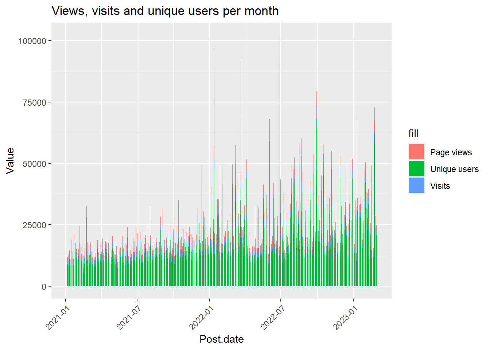
This graph also shows increase in all three metrics in 2022-2023. To see how these metrics crrespond to each other, I will calculate “visits ratio” and “unique.ratio”.
Page unique viewers.
Becuse “Uniques” variable represents number of unique people who came to the page and viewed it at least once, his metric represents popularity of the post. It’s distribution shows us that not all posts are equally popular:
`stat_bin()` using `bins = 30`. Pick better value with `binwidth`.
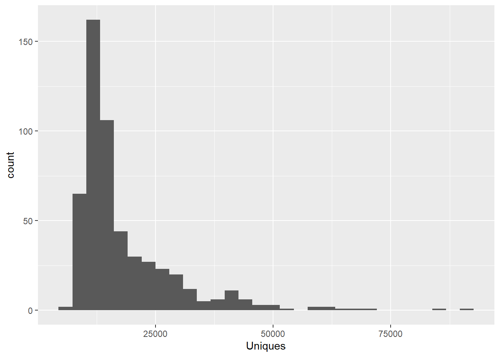
We can see a long tail on the right, showing that there is a number of posts who are way more popular. If we look at the distribution of this variable over time, we will see significant increase of average popularity after December 2021.
Code
ggplot( data=merged, mapping=aes(y=Uniques, x=merged$year_month))+geom_boxplot()+labs(title="Number of unique viewers per month", x="Month", y="Number of unique viewers")+theme(axis.text.x =element_text(angle =45, hjust =1))
Warning: Use of `merged$year_month` is discouraged.
ℹ Use `year_month` instead.
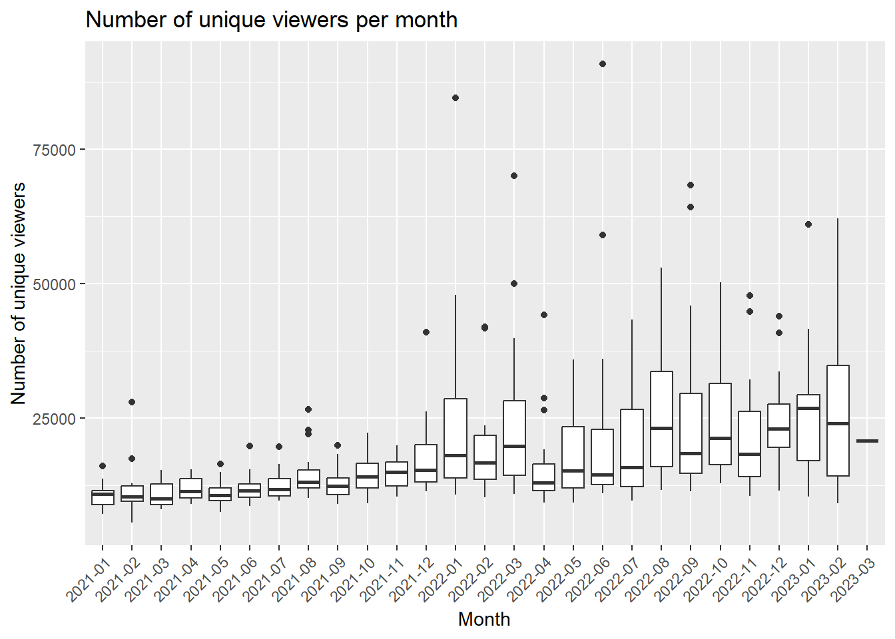
1.2. Engagement metrics:
Visit ratio and unique ratio:
“visits ratio” is the number of visits per total viwes. This metric tells us how often the page being re-viewed. The lower the ratio means that the page was viewed more times during single visit. Since repeated view can be considered a higher engagement, the lower visit ratio indicates higher engagement.
“unique ratio” - number of unique users per total views. It is telling us how often the same person re-visited the post. Lower ratio indicates repeated users, therefore higher engagement.
Both ratios are always in the range of 0 - 1.
Code
merged <- merged %>%mutate(uniques.ratio = Uniques /`Page views`)%>%mutate(visits.ratio = Visits /`Page views`)# str(merged)ggplot(merged, aes( y = uniques.ratio, x =post.date, )) +geom_point(color ="green" ) +labs(title ="Unique.ratio per post ", x ="Post.date", y ="Value") +theme(axis.text.x =element_text(angle =45, hjust =1))
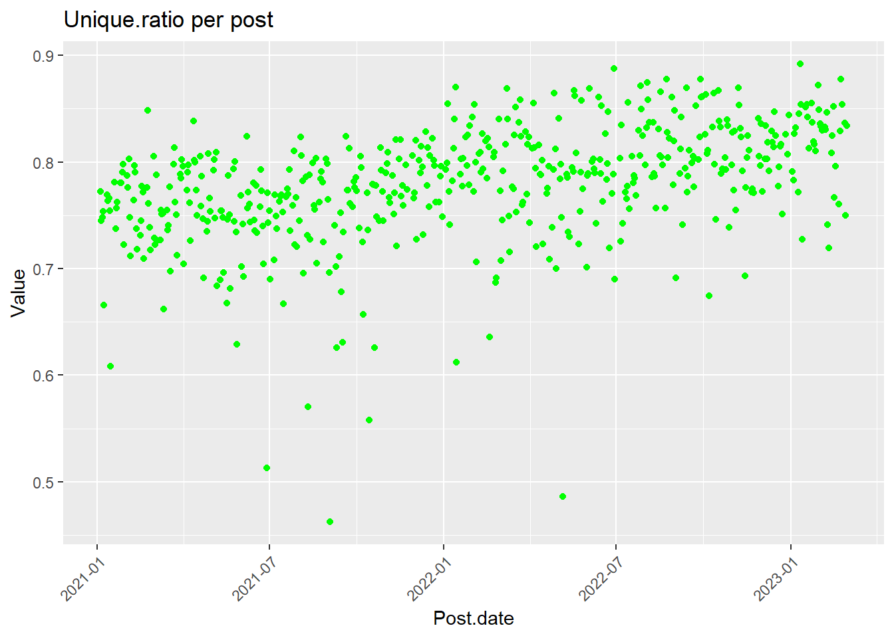
Code
ggplot(merged, aes( y = visits.ratio, x =post.date, )) +geom_point(color ="blue" ) +labs(title ="Visits.ratio per post ", x ="Post.date", y ="Value") +theme(axis.text.x =element_text(angle =45, hjust =1))
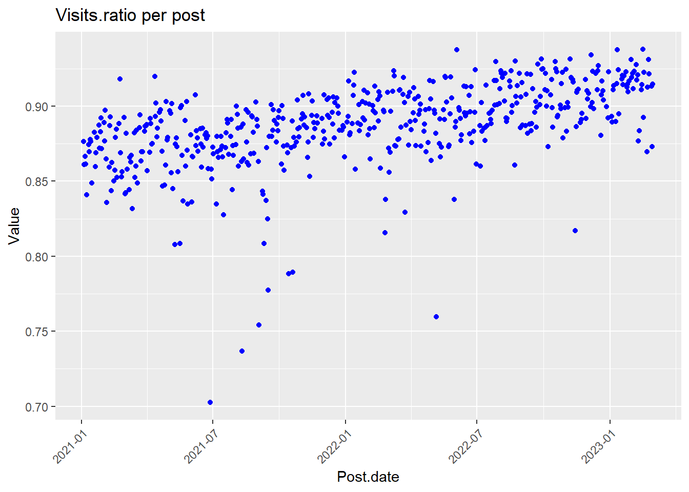
From the two graphs above we can see that the two variables are distributed very similarly.
If we plot them against each other and visualize their correlation, we can see that they highly correlated especially in higher values.
Density of the distribution also showing that most posts are visited once and by unique users, i.e. post is read once by each user.
Code
# DENSITY DISTRIBUTION HERE
Exit rate
This variable is measuring how many people visited the page and then left the website after the first view. This metric is the best measure of engagement for all users, as it represents the first step after being exposed to the post - either quitting the site or remaining on the site.
`stat_bin()` using `bins = 30`. Pick better value with `binwidth`.
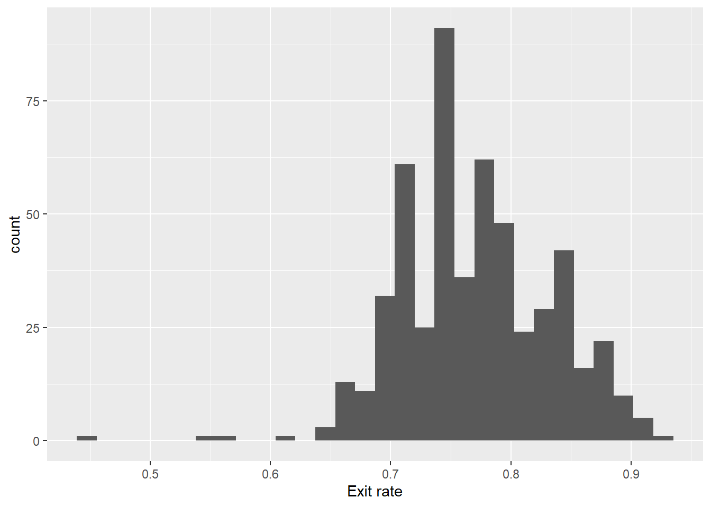
We can also see consistent increase of this value ovr time, similar to the trend seen before:
Code
ggplot(merged, mapping =aes(x=year_month , y=`Exit rate`, fill=year_month ))+geom_boxplot() +labs(title ="distribution of `Exit rate` per post ", y ="Exit rate" , x="Month")+theme(axis.text.x =element_text(angle =45, hjust =1))
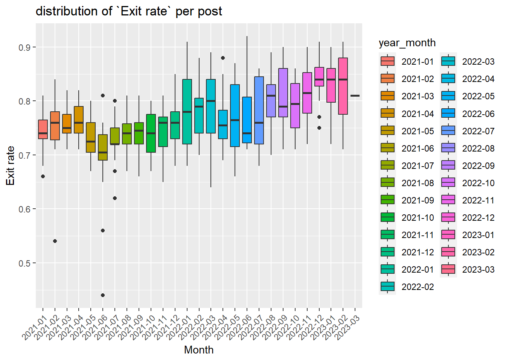
Number of reactions
This represents total amount of likes and dislikes of comments per post.To like/dislike the comment, user doesn’t have to log in.
Code
# merged$year_month # colnames(merged)ggplot(data=merged, mapping=aes(x=post.total.likes))+geom_histogram()+labs(title=" Number of all reactions per post")
`stat_bin()` using `bins = 30`. Pick better value with `binwidth`.
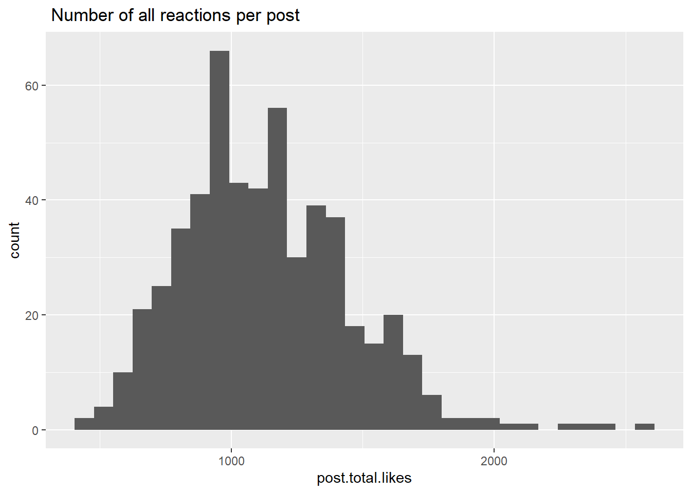
Since we already saw that there is large variability in popularity of posts, which can natually impact absolute amount of reactions. To account for number of views, we calculate reactions.ratio:
The absolute number of reactions and the ratio appear to decrease over time.
Number of comments: engagement metric for subset of readers. Absolute and per views.
To comment on the requires logging in from a user, which is an indicator of greater engagement of an individual user. Therefore this variable represents engagement of a subset of users - more loyal readers who have created an account.
`stat_bin()` using `bins = 30`. Pick better value with `binwidth`.
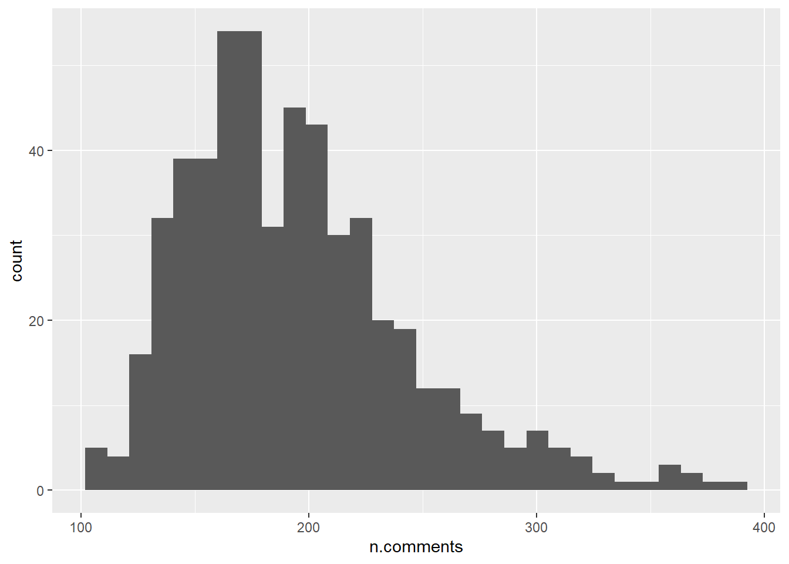
And change in the distribution over time:
Code
ggplot(merged, mapping =aes(x=year_month , y=n.comments, fill=year_month ))+geom_boxplot() +labs(title ="distribution of comments per post ", y ="Number of comments" )+scale_y_continuous(breaks =seq (from=0, to=10000, by=100)) +theme(axis.text.x =element_text(angle =45, hjust =1))
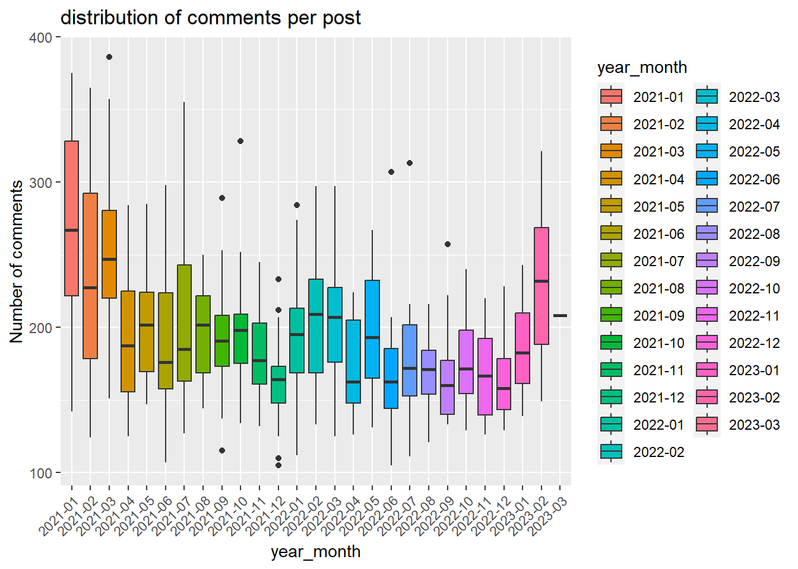
The trend in amount of comments over time is different. While previously reviewed variables seemed to increase over time, this variable decreases.
We can calculate the ratio of comments per If we compare absolute values fo comments and ratio of comments per page views, we see the decrease in both cases, while the ratio’s decrease is more dramatic:
Code
merged <- merged %>%mutate(comments.ratio = n.comments/`Page views`)ggplot(merged, mapping =aes(x=year_month , y=comments.ratio, fill=year_month ))+geom_boxplot() +labs(title ="distribution of comments ratio (comments/page views) ", y ="Number of comments" )+scale_y_continuous(breaks =seq (from=0, to=10000, by=100)) +theme(axis.text.x =element_text(angle =45, hjust =1))
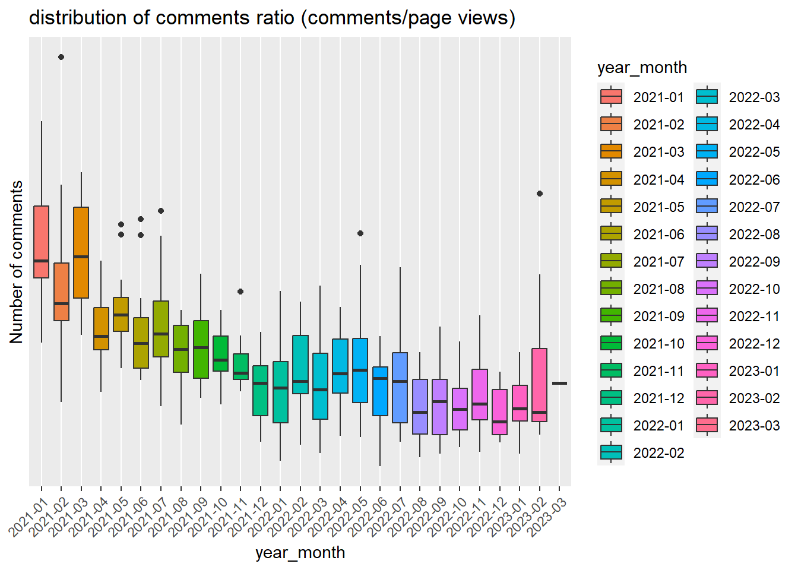
WE can see that with an increase of views (mostly driven by post popularity), comments ratio decreeases. So, newly added viewers are not adding to the engaged subset of readers.
The distribution of comments per post over time:
Code
# str(merged)ggplot(merged, mapping =aes(x=year_month , y=post.total.likes, fill=year_month ))+geom_boxplot() +labs(title ="distribution of reactions over time ", y ="Percentage of reactions " )+scale_y_continuous(breaks =seq (from=0, to=10000, by=100)) +theme(axis.text.x =element_text(angle =45, hjust =1))
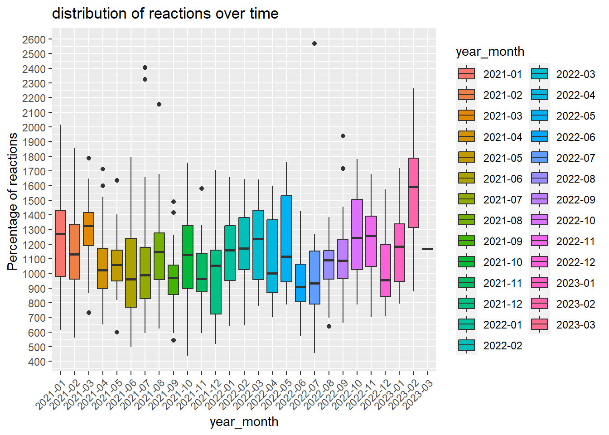
1.3 Impact of post popularity on engagement.
As we saw in the distributions of variables above, the popularity of the post might significantly influence its engagement.
Call:
lm(formula = adj.page.views ~ `Exit rate` + Uniques, data = merged)
Residuals:
Min 1Q Median 3Q Max
-0.25676 -0.06614 -0.03523 0.02731 1.28710
Coefficients:
Estimate Std. Error t value Pr(>|t|)
(Intercept) 2.181e-01 1.142e-01 1.910 0.0566 .
`Exit rate` 3.887e-02 1.643e-01 0.237 0.8131
Uniques 1.122e-04 9.078e-07 123.576 <2e-16 ***
---
Signif. codes: 0 '***' 0.001 '**' 0.01 '*' 0.05 '.' 0.1 ' ' 1
Residual standard error: 0.1441 on 532 degrees of freedom
Multiple R-squared: 0.9869, Adjusted R-squared: 0.9868
F-statistic: 1.998e+04 on 2 and 532 DF, p-value: < 2.2e-16
This model tells us that the page.views are mostly driven by post popularity and not impacted by user engagement.
To summarize the review ofr relationship between post popularity and engagement metric, we see consistent pattern of decreased engagement with increased popularity. To explore this connection further, lets review Sources of users that are coming to the website.
1.3.2. How popularity impacts engagement: Referral sources.
The website analytics provides information on where the viewers are coming from to the blog page. for example, if people clicked on the blog link posted on FaceBook, that would be referral from social media. If people clicked on the blog link within BDC website, that would be “BDC referral visit”.
There are 5 sources of referrals, each corresponding with a variable in the data set. Variable’s value is a number of visits from this referral source.
"Search + amp referral visits"
"Direct (non-email) referral visits"
"Other website referral visits"
"Social referral visits"
"BDC referral visits"
"Visits when post was on LL HP"
Code
#renaming variables for convenience: merged<-merged%>%rename(google ="Search + amp referral visits",direct ="Direct (non-email) referral visits",other.web ="Other website referral visits",social="Social referral visits",bdc="BDC referral visits",ll="Visits when post was on LL HP" )ggplot(merged, mapping=aes(x=post.date))+geom_point(aes(y=google), color="red")+geom_point(aes(y=direct), color="green")+geom_point(aes(y=other.web), color="yellow")+geom_point(aes(y=social), color="purple")+geom_point(aes(y=bdc), color="blue")+geom_point(aes(y=ll), color="pink") +labs(title ="referral sources per post ", y ="Number of referrals" , x="Post")+theme(axis.text.x =element_text(angle =45, hjust =1))
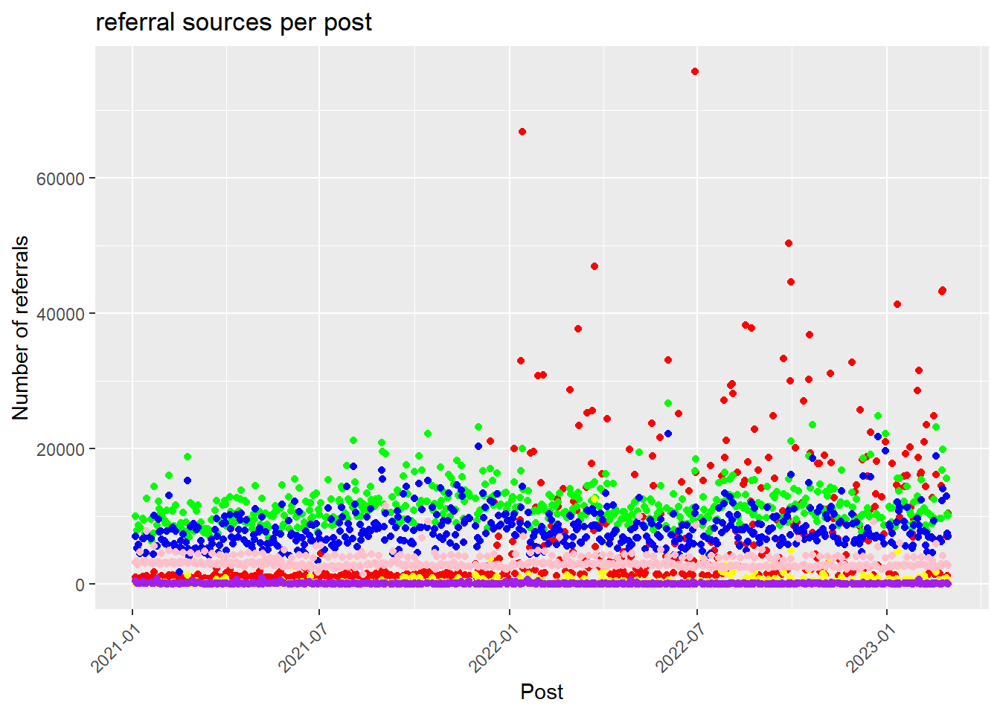
This graph clearly demonstrates increase of “Search + amp referral visits” after December 2021, while other referral sources maintain the same level over time. This increase matches changes observed in popularity ( Page Views), and engagement metrics that are highly correlated with popularity. It also doubles views of the posts in many cases and might significanly influence our model and conclusions.
“Second wave” causes:
Some posts demonstrate increased amount of views, coming from search engines. Some data shows, that these views are coming 2-3 days after the post date (ADD DATA HERE ).
——— Unfortunately, since views data is at the post level, and not distributed by date
We are interested to find out, what characteristics of the post (prior to it being picked up by google), correlate with its appearance on google news.
Number of comments within 1st 10 hours from the post -> google wave
Code
# calculating number of comments within first 10 hours # date and time of the post post.date <-comments.data %>%group_by(post_id)%>%arrange(written_at)%>%summarize(post.dt =first(written_at), n.coms =n())%>%filter (n.coms>100)%>%select(post_id, post.dt, n.coms)%>%arrange(desc(post_id))head(post.date )
# Calculating age of the post comments.data <-merge( comments.data , post.date , by ="post_id", all =TRUE)comments.data <-comments.data %>%mutate (age =difftime( written_at,post.dt, units ="hours"), early =ifelse(age<10, 1, 0))early.coms <-comments.data%>%group_by(post_id)%>%arrange(written_at)%>%summarize(early.sum =sum(early), n.coms =n())%>%filter (n.coms>100)%>%select(post_id, early.sum)%>%arrange(desc(post_id))# Adding number of early comments to merged dataset:merged <-merge( merged, early.coms , by ="post_id", all =TRUE)head(merged )
post_id post.date
1 27067757 2023-03-01
2 27067763 2023-02-28
3 27067769 2023-02-27
4 27067775 2023-02-24
5 27067781 2023-02-23
6 27067787 2023-02-22
Letter
1 love letters | blog | We&'ve gained weight – as a couple
2 love letters | blog | She was a friendly ghost, but I was still ghosted
3 love letters | blog | I waited for her to initiate sex – and it ended my marriage
4 love letters | blog | My husband doesn&'t share his money
5 love letters | blog | My wife won&'t go back to work
6 love letters | blog | He doesn&'t have time for me
Page views google direct Visits Uniques other.web social bdc ll Exits
1 24890 10407 10180 22766 20765 349 56 7088 2785 18547
2 15575 1210 10297 13597 11677 214 85 7461 2832 10127
3 28594 7027 15609 26115 23914 909 87 12957 3016 22464
4 72718 43419 19921 67007 62122 311 134 14106 4216 60915
5 67537 43173 16863 62888 59272 310 152 12344 2739 56929
6 28778 14466 9698 26269 23865 331 67 6332 3003 21515
Exit rate dup n.comments post.year post.month post.likes post.dislikes
1 0.81 0 208 2023 3 1001 167
2 0.74 0 264 2023 2 1908 118
3 0.86 0 241 2023 2 1195 167
4 0.91 0 321 2023 2 1921 341
5 0.91 0 294 2023 2 1445 549
6 0.82 0 182 2023 2 1337 85
post.total.likes blocked.sum pct.positive year_month uniques.ratio
1 1168 1 85.70205 2023-03 0.8342708
2 2026 1 94.17572 2023-02 0.7497271
3 1362 1 87.73862 2023-02 0.8363293
4 2262 3 84.92485 2023-02 0.8542864
5 1994 0 72.46740 2023-02 0.8776226
6 1422 0 94.02250 2023-02 0.8292793
visits.ratio reactions.ratio comments.ratio adj.page.views early.sum
1 0.9146645 0.04692648 0.008356770 2.4890 192
2 0.8730016 0.13008026 0.016950241 1.5575 247
3 0.9133035 0.04763237 0.008428342 2.8594 214
4 0.9214637 0.03110647 0.004414313 7.2718 261
5 0.9311637 0.02952456 0.004353169 6.7537 240
6 0.9128153 0.04941275 0.006324275 2.8778 142
Now, as I calculated number of early comments for all posts, I can see if that number correlated with google referrals
Call:
lm(formula = google ~ early.sum, data = merged.2)
Residuals:
Min 1Q Median 3Q Max
-15035 -6141 -2482 3559 54900
Coefficients:
Estimate Std. Error t value Pr(>|t|)
(Intercept) 5908.84 5265.21 1.122 0.26406
early.sum 94.56 30.73 3.077 0.00261 **
---
Signif. codes: 0 '***' 0.001 '**' 0.01 '*' 0.05 '.' 0.1 ' ' 1
Residual standard error: 10600 on 117 degrees of freedom
Multiple R-squared: 0.07486, Adjusted R-squared: 0.06695
F-statistic: 9.467 on 1 and 117 DF, p-value: 0.002605
We can see significant connection between early comments and google referrals above 10000 visits. However, R^2 is low in this model, which suggests that there are other factors that are not considered in this model. I will explore how days of the week and time of the post contribute to this relationship.
Code
# calculating day of the week for the post: colnames(comments.data)
Call:
lm(formula = log(google) ~ early.sum + post.weekday, data = merged.2)
Residuals:
Min 1Q Median 3Q Max
-0.85556 -0.25080 -0.05083 0.23281 1.25348
Coefficients:
Estimate Std. Error t value Pr(>|t|)
(Intercept) 9.30191 0.20350 45.710 < 2e-16 ***
early.sum 0.00352 0.00119 2.958 0.00377 **
post.weekday.L 0.01571 0.08732 0.180 0.85751
post.weekday.Q -0.02154 0.08544 -0.252 0.80145
post.weekday.C -0.02274 0.08280 -0.275 0.78409
post.weekday^4 0.15962 0.08043 1.985 0.04962 *
---
Signif. codes: 0 '***' 0.001 '**' 0.01 '*' 0.05 '.' 0.1 ' ' 1
Residual standard error: 0.4058 on 113 degrees of freedom
Multiple R-squared: 0.102, Adjusted R-squared: 0.06229
F-statistic: 2.568 on 5 and 113 DF, p-value: 0.03066
Code
# table(merged.weekdays$post.weekday)ggplot (merged, mapping =aes(x=early.sum, y=google, color =post.weekday))+geom_point( ) +geom_smooth(method="lm")+labs(title ="All google referrals and early comments", y ="Google referrals" , x="Early comments")+theme(axis.text.x =element_text(angle =45, hjust =1))+facet_wrap(~post.weekday)
`geom_smooth()` using formula = 'y ~ x'
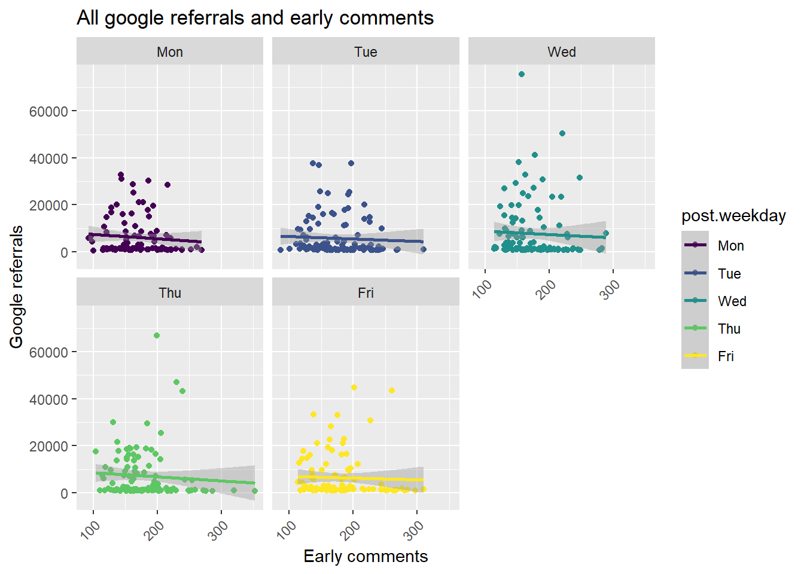
Code
ggplot (merged.3, mapping =aes(x=early.sum, y=google, color =post.weekday))+geom_point( ) +geom_smooth(method="lm")+labs(title ="Google referraps by erarly comments. After 1/1/2022", y ="Google referrals" , x="Early comments")+theme(axis.text.x =element_text(angle =45, hjust =1))+facet_wrap(~post.weekday)
`geom_smooth()` using formula = 'y ~ x'
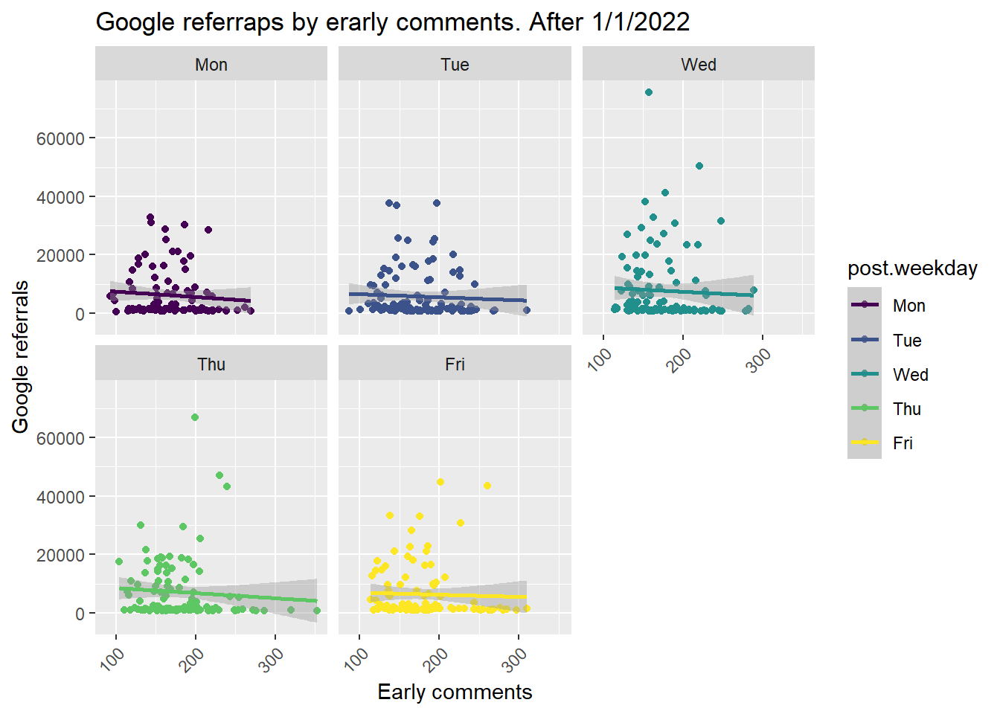
Code
ggplot (merged.2, mapping =aes(x=early.sum, y=google, color =post.weekday))+geom_point( ) +geom_smooth(method="lm")+labs(title ="Google referrals over 10K and early comments", y ="Google referrals" , x="Early comments")+theme(axis.text.x =element_text(angle =45, hjust =1))+facet_wrap(~post.weekday)
`geom_smooth()` using formula = 'y ~ x'
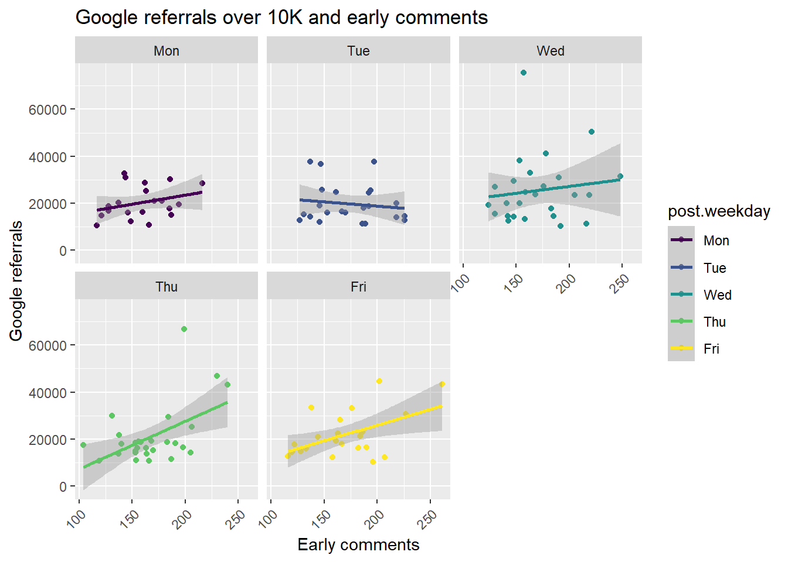
Our hypothesis that large amount of early comments triggers google referrals did not stand on its own. We can see some significant correlation between early comments and google referrals, but low coefficient and high deviation from predicated vlaues (low R^2) suggest that there are other , more influencial, factors that were not considered. To look for other factors, lets review other available variables in the dataset.
1.4.Conclusion
As we reviewed a variety of engagement metric, I found 1. that they are all strongly correlated to each other and influenced by post popularity: Engagement overall decreases as popularity increases.
In our further analysis I will need to include “Uniques” variable in the model to control for popularity
Also as a result of exploration of engagement metrics, we can distinguish two types of users: superficial visitors and loyal readers. The main difference is that loyal readers have created accounts and therefore can comment. As we see an increase in popularity, the loyal readers activity does not increase (n.comments), in fact quite opposite - it decreases. Such decrease needs further valiudation exploration of causes.
The difference in types of readers must be considered when addressing our main hypothesis whether authors engagement and other factors impacts reader’s engagement.
2. Independent variables (IV):
Authors comments
To identify, how much the author of the blog is engaged in the post, I will create an additional variable derived from a user_name field.
Code
# str(merged)comments.data$user_name<-ifelse (is.na(comments.data$user_name), 0, comments.data$user_name)comments.data$author<-ifelse (comments.data$user_name=="MeredithGoldstein", 1, 0)comments.grouped <-comments.data %>%group_by(post_id)%>%summarize(n.comments=n(),author.sum =sum(author))# dim(comments.grouped )# colnames(comments.grouped )# class(comments.grouped$author.sum)# Comments data contains rows that dont actually reporesent posts, and were crearted by web support team for troubleshooting. I need to remove these rows. They typically have very low number of commentscomments.grouped <-comments.grouped %>%filter(n.comments >100) # removing invalid posts created by the website management team.comments.grouped <-comments.grouped %>%select(post_id, author.sum)dim(comments.grouped)
[1] 535 2
Code
#adding author.sum to main data set: merged <-merge( merged , comments.grouped, by ="post_id", all =TRUE)ggplot(data=merged, mapping =aes(x=year_month , y=author.sum, fill=year_month ))+geom_boxplot() +labs(title ="distribution of Author's comments by months", y ="Author's comments" , x="Month")+theme(axis.text.x =element_text(angle =45, hjust =1))
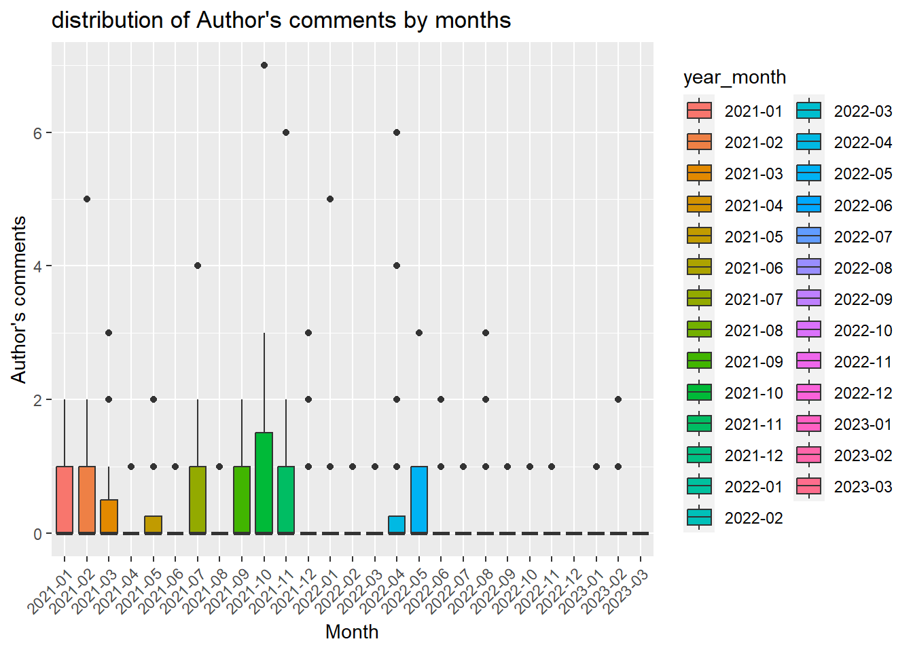
This graph shows, that majority of posts have no author’s comments. However, if we look at the box plots’ upper ranges, we can suggest a trend of decrease in author’s comments with time.
Mood of the post.
This is a numerical variable, calculated as percentage of “thumbs up” from all likes (both “thumbs up” and “thumbs down”).
Code
ggplot(merged, mapping =aes(x=year_month , y=pct.positive, fill=year_month ))+geom_boxplot() +labs(title ="distribution of Mood per post ", y ="Mood" , x="Month")+theme(axis.text.x =element_text(angle =45, hjust =1))
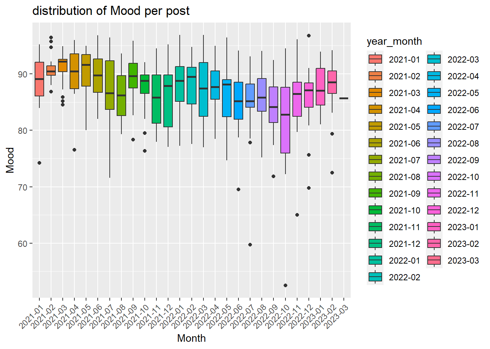
Blocked comments per post.
Now I will visualize amount of blocked comments per post:
Code
ggplot(merged, mapping =aes(x=year_month , y=blocked.sum, fill=year_month ))+geom_boxplot() +labs(title ="Number Blocked comments per post ", y ="Number of blocked comments per post" , x="Month")+theme(axis.text.x =element_text(angle =45, hjust =1))
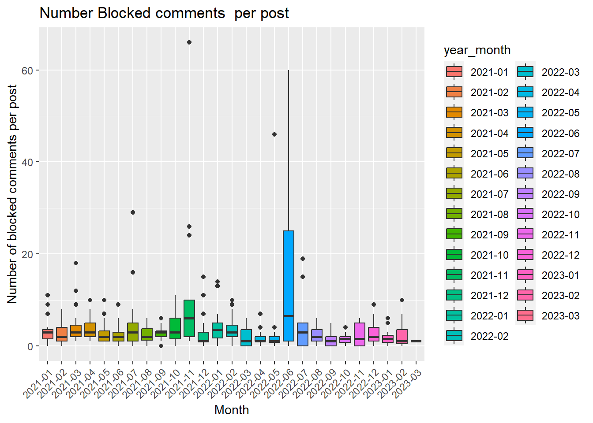
3. Creating the model for main hypothesis testing
Now as we reviewed Independent variables,I will create a model :
3.1 Engagement of all viewers
Code
# colnames(merged)summary(lm(`Exit rate`~log(Uniques) + author.sum + pct.positive, data = merged))
Call:
lm(formula = `Exit rate` ~ log(Uniques) + author.sum + pct.positive,
data = merged)
Residuals:
Min 1Q Median 3Q Max
-0.258010 -0.016118 0.001054 0.019925 0.073713
Coefficients:
Estimate Std. Error t value Pr(>|t|)
(Intercept) -0.3535691 0.0384749 -9.190 <2e-16 ***
log(Uniques) 0.1139193 0.0029152 39.078 <2e-16 ***
author.sum -0.0033947 0.0016020 -2.119 0.0346 *
pct.positive 0.0002473 0.0002413 1.025 0.3061
---
Signif. codes: 0 '***' 0.001 '**' 0.01 '*' 0.05 '.' 0.1 ' ' 1
Residual standard error: 0.03063 on 531 degrees of freedom
Multiple R-squared: 0.7516, Adjusted R-squared: 0.7502
F-statistic: 535.6 on 3 and 531 DF, p-value: < 2.2e-16
This shows that engagement is decreasing with popularity and someone increasing with author’s comments. However, the contribution of authors comments is very small.
3.2 Engagement of loyal viewers
Now we will use loyal readers engagement as DV:
Code
summary(lm(n.comments ~log(Uniques) + author.sum + pct.positive, data = merged))
Call:
lm(formula = n.comments ~ log(Uniques) + author.sum + pct.positive,
data = merged)
Residuals:
Min 1Q Median 3Q Max
-97.385 -34.944 -8.343 26.386 187.449
Coefficients:
Estimate Std. Error t value Pr(>|t|)
(Intercept) 151.8377 62.3241 2.436 0.0152 *
log(Uniques) -2.7835 4.7222 -0.589 0.5558
author.sum 4.8545 2.5951 1.871 0.0619 .
pct.positive 0.7849 0.3909 2.008 0.0452 *
---
Signif. codes: 0 '***' 0.001 '**' 0.01 '*' 0.05 '.' 0.1 ' ' 1
Residual standard error: 49.61 on 531 degrees of freedom
Multiple R-squared: 0.01658, Adjusted R-squared: 0.01103
F-statistic: 2.984 on 3 and 531 DF, p-value: 0.03084
Code
summary(lm(n.comments ~log(Uniques) + author.sum + pct.positive +blocked.sum, data = merged))
Call:
lm(formula = n.comments ~ log(Uniques) + author.sum + pct.positive +
blocked.sum, data = merged)
Residuals:
Min 1Q Median 3Q Max
-91.584 -33.680 -9.363 26.778 183.815
Coefficients:
Estimate Std. Error t value Pr(>|t|)
(Intercept) 126.2298 62.3762 2.024 0.04350 *
log(Uniques) -1.6645 4.6984 -0.354 0.72328
author.sum 4.4709 2.5773 1.735 0.08337 .
pct.positive 0.9101 0.3899 2.334 0.01997 *
blocked.sum 1.0761 0.3474 3.097 0.00206 **
---
Signif. codes: 0 '***' 0.001 '**' 0.01 '*' 0.05 '.' 0.1 ' ' 1
Residual standard error: 49.22 on 530 degrees of freedom
Multiple R-squared: 0.03407, Adjusted R-squared: 0.02678
F-statistic: 4.673 on 4 and 530 DF, p-value: 0.001029
Number of comments, representing engagement is somewhat impacted by three independent variables, but this moder has low R^2 , which suggests that there are other factors impacting loyal reader’s engagement that a re not considered in this model.
Adding a weekday:
Adding the weekday of the post ad additional IV increases R^2 and shows significance for one of the levels:
summary(lm(e.rate ~log(Uniques) + author.sum+early.sum, data = merged))
Call:
lm(formula = e.rate ~ log(Uniques) + author.sum + early.sum,
data = merged)
Residuals:
Min 1Q Median 3Q Max
-2538.89 -143.55 24.05 198.90 685.26
Coefficients:
Estimate Std. Error t value Pr(>|t|)
(Intercept) -3634.7905 281.4951 -12.912 < 2e-16 ***
log(Uniques) 1144.2628 28.0370 40.813 < 2e-16 ***
author.sum -35.9680 15.6776 -2.294 0.0222 *
early.sum 1.5193 0.3042 4.994 8.04e-07 ***
---
Signif. codes: 0 '***' 0.001 '**' 0.01 '*' 0.05 '.' 0.1 ' ' 1
Residual standard error: 299.6 on 531 degrees of freedom
Multiple R-squared: 0.7623, Adjusted R-squared: 0.761
F-statistic: 567.6 on 3 and 531 DF, p-value: < 2.2e-16
The model’s predictive value is pretty good (probably due to popularity being included) : 0.77. It also appears that this connection We can check it, by excluding the popularity, as see that R^2 drops dramatically:
Code
summary(lm(e.rate ~ author.sum+early.sum, data = merged))
Call:
lm(formula = e.rate ~ author.sum + early.sum, data = merged)
Residuals:
Min 1Q Median 3Q Max
-3227.6 -410.9 -65.3 383.0 1613.4
Coefficients:
Estimate Std. Error t value Pr(>|t|)
(Intercept) 7634.2416 111.2795 68.604 <2e-16 ***
author.sum -92.0013 31.7347 -2.899 0.0039 **
early.sum 0.5435 0.6163 0.882 0.3783
---
Signif. codes: 0 '***' 0.001 '**' 0.01 '*' 0.05 '.' 0.1 ' ' 1
Residual standard error: 608.8 on 532 degrees of freedom
Multiple R-squared: 0.01667, Adjusted R-squared: 0.01298
F-statistic: 4.51 on 2 and 532 DF, p-value: 0.01142
4. Conlusion
This study explored the connection between user’s online engagement and bolg’s author engagement. To do so, we also analyzed the impact of post popularity on engagement.
Code
knitr::include_graphics("C:\\Users\\Diana\\OneDrive - University Of Massachusetts Medical School\\Documents\\R\\R working directory\\DACSS\\603\\my study files for dacss603\\FP diagram .png")
The results showed that the post popularity is the major factor for online engagement and is negatively correlated with it. i.e. more popular posts tend to be less engaging.
We also identified two groups of users, whose engagement is measured with different metrics. We explored how blog author’s comments impact engagement of each group. We found than there is no significant impact of authors engagement on users engagement. Such characteristics, as post mood and blocked comments also showed no connection with engagement of either groups of users.
For discussion:
not sure what to do with this:
I will add other variables in the model to see if any other metrics also contribute:
summary(lm(`Page views`~ Uniques + author.sum , data = merged))
Call:
lm(formula = `Page views` ~ Uniques + author.sum, data = merged)
Residuals:
Min 1Q Median 3Q Max
-2573.8 -640.4 -324.1 282.2 12709.3
Coefficients:
Estimate Std. Error t value Pr(>|t|)
(Intercept) 2.348e+03 1.226e+02 19.161 < 2e-16 ***
Uniques 1.125e+00 5.581e-03 201.545 < 2e-16 ***
author.sum 2.443e+02 7.452e+01 3.278 0.00111 **
---
Signif. codes: 0 '***' 0.001 '**' 0.01 '*' 0.05 '.' 0.1 ' ' 1
Residual standard error: 1426 on 532 degrees of freedom
Multiple R-squared: 0.9871, Adjusted R-squared: 0.9871
F-statistic: 2.039e+04 on 2 and 532 DF, p-value: < 2.2e-16
Code
summary(lm(Uniques ~ author.sum , data = merged))
Call:
lm(formula = Uniques ~ author.sum, data = merged)
Residuals:
Min 1Q Median 3Q Max
-11407 -6836 -3897 2873 72249
Coefficients:
Estimate Std. Error t value Pr(>|t|)
(Intercept) 18522.4 510.9 36.254 <2e-16 ***
author.sum -1028.1 576.6 -1.783 0.0752 .
---
Signif. codes: 0 '***' 0.001 '**' 0.01 '*' 0.05 '.' 0.1 ' ' 1
Residual standard error: 11070 on 533 degrees of freedom
Multiple R-squared: 0.005929, Adjusted R-squared: 0.004064
F-statistic: 3.179 on 1 and 533 DF, p-value: 0.07517
While engagement metrics (exit rate and comments) did not show significant contribution, authors comment appeared significant in this model. - this is really out of place, i just don’t want to lose this.
Source Code
---title: "Final Project check-in 2"author: "Diana Rinker"description: "Final project DACSS 603"date: "4/24/2023"format: html: toc: true code-fold: true code-copy: true code-tools: trueeditor: markdown: wrap: 72---## DACSS 603, spring 2023## Final Project check-in 2, Diana Rinker.# Introduction. Online engagementIt is well known that online engagement and popularity with the webresource is a highly valuable metric and is driving site revenue. Thisresearch project is exploring which factors contribute to users onlineengagement.To do that I will use the data of an online blog on the news website.The author of this blog is posting articles about interpersonalrelationships every work day (Mon- Fri). The posts are formulated as aletter from a reader with the situation and a question aboutrelationships. The author gives an advice about the situation. Websitereaders are free to comment under each post, but cannot make their ownposts.All post methadata and comments are public. They are saved by thewebsite and available for the analysis. Using this data set, I willexplore how readers' engagement connected with blogs's authorengagement, site comments', web source of readers and negative behaviorsonline.My research question is: Does the authors engagement in the conversationaround the post makes readers more engaged and promotes positiveinteractions among them?**DV:** My dependent construct is **"user's engagement**", I willmeasure users' engagement at the level of individual post, using thefollowing metrics:1. Page views2. Page visits (one visit can contain a few views, if the person visits other pages on the site)3. Unique users. One person can visit the same page a few times (it is calculated for all time since the page was posted).4. Number of votes: "thums up" or "thumbs down"5. Number of comments6. Exit rate or "bounces". When the visitor is coming to the page and then leaving, i.e. not opening other pages on this website.L2 - page readers \* Reveal letter \* Reveal comments**IV:** My main independent variable is **Blog's author engagement.** Iwill measure authors engagement as the factor variable, with thefollowing levels:A. Unspecified commentB. Featured commentC. Engagement in conversationTo control for **confounders,** I will also measure the follwingvariables:1. Topic of the post ("post tag"), categorical variable.2. Source of the readers, also categorical variable.3. Mood of the conversation , derivative continuous variable calculated as the ratio of "likes" to "dislikes".4. Blocked and flagged comments.```{r, echo=F}#Loading necessary libraries: library(readxl)library(dplyr)library(ggplot2)library(tidyverse)```### Data source and description. To answer my research question I will use two datasets. the first dataset has information about all comments associated with each post by postID. The second data set is analytics data for the web bage. It containsone post per row and variables describe each post as a whole withoutbreaking down to the comment level.In this project I will analyze posts for January 2021 - February 2023.Here is the list of variables in each dataset: Post-level data:```{r, echo=T}getwd()# First, I will load the data set with the comment level data:raw <-as_tibble (read_csv("C:\\Users\\Diana\\OneDrive - University Of Massachusetts Medical School\\Documents\\R\\R working directory\\DACSS\\603\\my study files for dacss603\\globe\\ data.2021.plus.csv"))comments.data<-raw colnames (comments.data)head(comments.data$written_at)comments.data <-comments.data%>%mutate(com.year =format(written_at,format ="%Y" ))# range(comments.data$com.year)# dim(comments.data)str(comments.data)```Comment data: ```{r, echo=T}# Second, loadng post-level data :merged <-as_tibble (read_csv("C:\\Users\\Diana\\OneDrive - University Of Massachusetts Medical School\\Documents\\R\\R working directory\\DACSS\\603\\my study files for dacss603\\globe\\data.merged.csv"))# colnames(merged)str(merged)```BeTo begin, I will review available variables and evaluate whether it is agood measure for this study.# 1.Post characteristics: ## 1.1.Popularity### Page viewsThis is the most general metric, representing how many views the postreceived. Views do not distinguish repeated views by the same person.```{r, echo=T}# str(merged)ggplot(data=merged, mapping=aes(x=`Page views`))+geom_histogram()``````{r, echo=T}merged$post.month <-as.numeric(merged$post.month)merged$year_month <-paste0(merged$post.year, "-", sprintf("%02d", merged$post.month))ggplot( data=merged, mapping=aes(y=`Page views`, x=year_month))+geom_boxplot()+labs(title="Number of post wiews per month", x="Month", y="Number of vews")+theme(axis.text.x =element_text(angle =45, hjust =1))# ggplot(data=merged, mapping=aes(x=log(`Page views`)))+# geom_histogram()```From this graph we can see that the numbers of views is increased overtime. To get a better understanding of it, lets review other metrics.### Page visits and unique usersVisit is an instance of a user engaging with bdc website. The user canvisit a few pages of the site and re-visit them, creaing few views inonce visit.Once th user left the website, the visit is over.There also can be many visits by the same viewer. To account forrepeated users there is "Uniques" variable. It tells us how many uniqueusers saw the post. The relationship will always be thatUniques \< Visits \< ViewsLets plot them together:```{r, echo=T}# str(merged)ggplot(merged, aes(x =post.date )) +geom_bar(aes(y =`Page views`, fill ="Page views"), stat ="identity", position ="dodge", width =0.6) +geom_bar(aes(y = Visits, fill ="Visits"), stat ="identity", position ="dodge", width =0.6) +geom_bar(aes(y = Uniques, fill ="Unique users"), stat ="identity", position ="dodge", width =0.6) +labs(title ="Views, visits and unique users per month", x ="Post.date", y ="Value") +theme(axis.text.x =element_text(angle =45, hjust =1))```This graph also shows increase in all three metrics in 2022-2023. To seehow these metrics crrespond to each other, I will calculate "visitsratio" and "unique.ratio".### Page unique viewers.Becuse "Uniques" variable represents number of unique people who came tothe page and viewed it at least once, his metric represents popularityof the post. It's distribution shows us that not all posts are equallypopular:```{r, echo=T}# colnames(merged)ggplot(data=merged, mapping=aes(x=Uniques))+geom_histogram()```We can see a long tail on the right, showing that there is a number ofposts who are way more popular. If we look at the distribution of thisvariable over time, we will see significant increase of averagepopularity after December 2021.```{r, echo=T}ggplot( data=merged, mapping=aes(y=Uniques, x=merged$year_month))+geom_boxplot()+labs(title="Number of unique viewers per month", x="Month", y="Number of unique viewers")+theme(axis.text.x =element_text(angle =45, hjust =1))```## 1.2. Engagement metrics:### Visit ratio and unique ratio:"visits ratio" is the number of visits per total viwes. This metrictells us how often the page being re-viewed. The lower the ratio meansthat the page was viewed more times during single visit. Since repeatedview can be considered a higher engagement, the lower visit ratioindicates higher engagement."unique ratio" - number of unique users per total views. It is tellingus how often the same person re-visited the post. Lower ratio indicatesrepeated users, therefore higher engagement.Both ratios are always in the range of 0 - 1.```{r, echo=T} merged <- merged %>%mutate(uniques.ratio = Uniques /`Page views`)%>%mutate(visits.ratio = Visits /`Page views`)# str(merged)ggplot(merged, aes( y = uniques.ratio, x =post.date, )) +geom_point(color ="green" ) +labs(title ="Unique.ratio per post ", x ="Post.date", y ="Value") +theme(axis.text.x =element_text(angle =45, hjust =1)) ggplot(merged, aes( y = visits.ratio, x =post.date, )) +geom_point(color ="blue" ) +labs(title ="Visits.ratio per post ", x ="Post.date", y ="Value") +theme(axis.text.x =element_text(angle =45, hjust =1))```From the two graphs above we can see that the two variables aredistributed very similarly.If we plot them against each other and visualize their correlation, wecan see that they highly correlated especially in higher values.```{r, echo=T}plot(merged$uniques.ratio, merged$visits.ratio)correlation <-cor(merged$uniques.ratio, merged$visits.ratio)correlation```Density of the distribution also showing that most posts are visitedonce and by unique users, i.e. post is read once by each user.```{r, echo=T}# DENSITY DISTRIBUTION HERE ```### Exit rateThis variable is measuring how many people visited the page and thenleft the website after the first view. This metric is the best measureof engagement for all users, as it represents the first step after beingexposed to the post - either quitting the site or remaining on the site.Here can see the distribution of this variable :```{r, echo=T}# str(merged)merged$`Exit rate`<-as.numeric(sub("%", "", merged$`Exit rate`)) /100ggplot(data=merged, mapping=aes(x=`Exit rate`))+geom_histogram()```We can also see consistent increase of this value ovr time, similar tothe trend seen before:```{r, echo=T}ggplot(merged, mapping =aes(x=year_month , y=`Exit rate`, fill=year_month ))+geom_boxplot() +labs(title ="distribution of `Exit rate` per post ", y ="Exit rate" , x="Month")+theme(axis.text.x =element_text(angle =45, hjust =1))```### Number of reactionsThis represents total amount of likes and dislikes of comments perpost.To like/dislike the comment, user doesn't have to log in.```{r, echo=T}# merged$year_month # colnames(merged)ggplot(data=merged, mapping=aes(x=post.total.likes))+geom_histogram()+labs(title=" Number of all reactions per post")```Since we already saw that there is large variability in popularity ofposts, which can natually impact absolute amount of reactions. Toaccount for number of views, we calculate reactions.ratio:```{r, echo=T} merged <- merged %>%mutate(reactions.ratio = post.total.likes /`Page views`)# str(merged)ggplot(merged, mapping =aes(x=year_month , y=reactions.ratio, fill=year_month ))+geom_boxplot() +labs(title ="distribution of reactions ", y ="Percentage of reactions " )+scale_y_continuous(breaks =seq (from=0, to=10000, by=100)) +theme(axis.text.x =element_text(angle =45, hjust =1))```The absolute number of reactions and the ratio appear to decrease overtime.### Number of comments: engagement metric for subset of readers. Absolute and per views.To comment on the requires logging in from a user, which is an indicatorof greater engagement of an individual user. Therefore this variablerepresents engagement of a subset of users - more loyal readers who havecreated an account.```{r, echo=T}# merged$year_month ggplot(data=merged, mapping=aes(x=n.comments))+geom_histogram()```And change in the distribution over time:```{r, echo=T}ggplot(merged, mapping =aes(x=year_month , y=n.comments, fill=year_month ))+geom_boxplot() +labs(title ="distribution of comments per post ", y ="Number of comments" )+scale_y_continuous(breaks =seq (from=0, to=10000, by=100)) +theme(axis.text.x =element_text(angle =45, hjust =1))```The trend in amount of comments over time is different. While previouslyreviewed variables seemed to increase over time, this variabledecreases.We can calculate the ratio of comments per If we compare absolute valuesfo comments and ratio of comments per page views, we see the decrease inboth cases, while the ratio's decrease is more dramatic:```{r, echo=T} merged <- merged %>%mutate(comments.ratio = n.comments/`Page views`)ggplot(merged, mapping =aes(x=year_month , y=comments.ratio, fill=year_month ))+geom_boxplot() +labs(title ="distribution of comments ratio (comments/page views) ", y ="Number of comments" )+scale_y_continuous(breaks =seq (from=0, to=10000, by=100)) +theme(axis.text.x =element_text(angle =45, hjust =1))```WE can see that with an increase of views (mostly driven by postpopularity), comments ratio decreeases. So, newly added viewers are notadding to the engaged subset of readers.<!-- It is also more likely that the users who logged and commented will return to the post page , which would correspond with the decrased in visits.ratio and uniques.ratio). -->The distribution of comments per post over time:```{r, echo=T}# str(merged)ggplot(merged, mapping =aes(x=year_month , y=post.total.likes, fill=year_month ))+geom_boxplot() +labs(title ="distribution of reactions over time ", y ="Percentage of reactions " )+scale_y_continuous(breaks =seq (from=0, to=10000, by=100)) +theme(axis.text.x =element_text(angle =45, hjust =1))```## 1.3 Impact of post popularity on engagement.As we saw in the distributions of variables above, the popularity of thepost might significantly influence its engagement. #### Exit rate as engagementets review how it is impacting exit rate :```{r, echo=T}ggplot(merged, mapping=aes(x=log(Uniques), y=`Exit rate` ))+geom_point()summary(lm(`Exit rate`~+log(Uniques) , data = merged))```#### Uniques.ratio as engagementSince unique ratio is also engagement measure, lets see how its impactedby popularity:```{r, echo=T}colnames(merged)ggplot(merged, mapping=aes(x=log(Uniques), y=uniques.ratio ))+geom_point()summary(lm(uniques.ratio~+log(Uniques) , data = merged))```#### Visits ratio as engagementVisits ratio is also engagement measure, lets see how its impacted bypopularity:```{r, echo=T}colnames(merged)ggplot(merged, mapping=aes(x=log(Uniques), y=visits.ratio ))+geom_point()summary(lm(visits.ratio~+log(Uniques) , data = merged))```### 1.3.1 Page views as derivative from popularity and not engagement:```{r, echo=T}# colnames(merged)merged <- merged %>%mutate(adj.page.views =`Page views`/10000)summary(lm(adj.page.views ~`Exit rate`+ Uniques, data = merged))```This model tells us that the page.views are mostly driven by postpopularity and not impacted by user engagement.### <!-- The model is showing significant correlation between all of engagement metrics we have identified and popularity . --><!-- Negative correlation with visits.ratio means that repeated views within one visit correspond with more overall views. --><!-- Also "Exite rate: positively correspond with the number of views, meaning people are more likely to bounce when there are more views. --><!-- I need to point out, that there are three possible scenarios when a user visiting the page: --><!-- 1. They view once, then leave the website - > bounce --><!-- 2. They view once, then go to different page on the website -> (1-bounce - not reported in my dataset) --><!-- 3. They view, then go to different page on the website, then return (visits ratio goes down: +1 view, while "visit" is the same) --><!-- Therefore # 1 and #3 are not necessarily negatively correlated. In our data we can see that scenarios 1 and 3 are increasing as overall page views increase. Likes ratio shows significant no correlation with total views, indicating no connection between reactions frequency and amount of views. --><!-- Correlation with comments ratio is significant and negative. We can conclude, that while more popular posts are much less commented on. -->To summarize the review ofr relationship between post popularity andengagement metric, we see consistent pattern of decreased engagementwith increased popularity. To explore this connection further, letsreview Sources of users that are coming to the website.### 1.3.2. How popularity impacts engagement: Referral sources.The website analytics provides information on where the viewers arecoming from to the blog page. for example, if people clicked on the bloglink posted on FaceBook, that would be referral from social media. Ifpeople clicked on the blog link within BDC website, that would be "BDCreferral visit".There are 5 sources of referrals, each corresponding with a variable inthe data set. Variable's value is a number of visits from this referralsource.``` "Search + amp referral visits" "Direct (non-email) referral visits" "Other website referral visits" "Social referral visits" "BDC referral visits" "Visits when post was on LL HP" ``````{r, echo=T}#renaming variables for convenience: merged<-merged%>%rename(google ="Search + amp referral visits",direct ="Direct (non-email) referral visits",other.web ="Other website referral visits",social="Social referral visits",bdc="BDC referral visits",ll="Visits when post was on LL HP" )ggplot(merged, mapping=aes(x=post.date))+geom_point(aes(y=google), color="red")+geom_point(aes(y=direct), color="green")+geom_point(aes(y=other.web), color="yellow")+geom_point(aes(y=social), color="purple")+geom_point(aes(y=bdc), color="blue")+geom_point(aes(y=ll), color="pink") +labs(title ="referral sources per post ", y ="Number of referrals" , x="Post")+theme(axis.text.x =element_text(angle =45, hjust =1))```This graph clearly demonstrates increase of "Search + amp referralvisits" after December 2021, while other referral sources maintain thesame level over time. This increase matches changes observed inpopularity ( Page Views), and engagement metrics that are highlycorrelated with popularity. It also doubles views of the posts in manycases and might significanly influence our model and conclusions.### "Second wave" causes:Some posts demonstrate increased amount of views, coming from searchengines. Some data shows, that these views are coming 2-3 days after thepost date (ADD DATA HERE ).--------- Unfortunately, since views data is at the post level, and notdistributed by dateWe are interested to find out, what characteristics of the post (priorto it being picked up by google), correlate with its appearance ongoogle news.Number of comments within 1st 10 hours from the post -\> google wave```{r, echo=T}# calculating number of comments within first 10 hours # date and time of the post post.date <-comments.data %>%group_by(post_id)%>%arrange(written_at)%>%summarize(post.dt =first(written_at), n.coms =n())%>%filter (n.coms>100)%>%select(post_id, post.dt, n.coms)%>%arrange(desc(post_id))head(post.date )# Calculating age of the post comments.data <-merge( comments.data , post.date , by ="post_id", all =TRUE)comments.data <-comments.data %>%mutate (age =difftime( written_at,post.dt, units ="hours"), early =ifelse(age<10, 1, 0))early.coms <-comments.data%>%group_by(post_id)%>%arrange(written_at)%>%summarize(early.sum =sum(early), n.coms =n())%>%filter (n.coms>100)%>%select(post_id, early.sum)%>%arrange(desc(post_id))# Adding number of early comments to merged dataset:merged <-merge( merged, early.coms , by ="post_id", all =TRUE)head(merged )```Now, as I calculated number of early comments for all posts, I can seeif that number correlated with google referrals```{r, echo=T}merged.2<-merged%>%filter(google>10000)correlation.2<-cor(merged.2$early.sum, merged.2$google)correlation.2plot(merged.2$early.sum, merged.2$google)summary(lm(google ~early.sum, data=merged.2))```We can see significant connection between early comments and googlereferrals above 10000 visits. However, R\^2 is low in this model, whichsuggests that there are other factors that are not considered in thismodel. I will explore how days of the week and time of the postcontribute to this relationship.```{r, echo=T}# calculating day of the week for the post: colnames(comments.data)# Calculating age of the post library(lubridate)comments.data <-comments.data %>%mutate (weekday =wday(post.dt, label =TRUE), weekend =ifelse(weekday =="Fri"| weekday =="Sat", 1, 0))# class(week.days$weekday)# levels(week.days$weekday) # week.days$weekendweekdays <-comments.data %>%group_by(post_id)%>%arrange(written_at)%>%summarize(post.weekday =first(weekday), post.weekend =first(weekend),n.coms =n())%>%filter (n.coms>100)%>%select(post_id, post.weekday,post.weekend )%>%arrange(desc(post_id))# Adding number of early comments to merged dataset:merged <-merge( merged, weekdays , by ="post_id", all =TRUE)colnames(merged)# levels(merged$post.weekday)```### Adding weekdays to the model```{r, echo=T}merged.2<-merged %>%filter(google>10000)merged.3<-merged %>%filter(post.date>01/01/2022)# correlation.2 <- cor(merged.weekdays$early.sum, merged.weekdays$google)# correlation.2plot(merged$post.weekday, merged$google)summary(lm(log(google) ~early.sum +post.weekday , data=merged.2))# table(merged.weekdays$post.weekday)ggplot (merged, mapping =aes(x=early.sum, y=google, color =post.weekday))+geom_point( ) +geom_smooth(method="lm")+labs(title ="All google referrals and early comments", y ="Google referrals" , x="Early comments")+theme(axis.text.x =element_text(angle =45, hjust =1))+facet_wrap(~post.weekday)ggplot (merged.3, mapping =aes(x=early.sum, y=google, color =post.weekday))+geom_point( ) +geom_smooth(method="lm")+labs(title ="Google referraps by erarly comments. After 1/1/2022", y ="Google referrals" , x="Early comments")+theme(axis.text.x =element_text(angle =45, hjust =1))+facet_wrap(~post.weekday)ggplot (merged.2, mapping =aes(x=early.sum, y=google, color =post.weekday))+geom_point( ) +geom_smooth(method="lm")+labs(title ="Google referrals over 10K and early comments", y ="Google referrals" , x="Early comments")+theme(axis.text.x =element_text(angle =45, hjust =1))+facet_wrap(~post.weekday)```Our hypothesis that large amount of early comments triggers googlereferrals did not stand on its own. We can see some significantcorrelation between early comments and google referrals, but lowcoefficient and high deviation from predicated vlaues (low R\^2) suggestthat there are other , more influencial, factors that were notconsidered. To look for other factors, lets review other availablevariables in the dataset.## 1.4.ConclusionAs we reviewed a variety of engagement metric, I found 1. that they areall strongly correlated to each other and influenced by post popularity:Engagement overall decreases as popularity increases.In our further analysis I will need to include "Uniques" variable in themodel to control for popularity2. Also as a result of exploration of engagement metrics, we can distinguish two types of users: superficial visitors and loyal readers. The main difference is that loyal readers have created accounts and therefore can comment. As we see an increase in popularity, the loyal readers activity does not increase (n.comments), in fact quite opposite - it decreases. Such decrease needs further valiudation exploration of causes.The difference in types of readers must be considered when addressingour main hypothesis whether authors engagement and other factors impactsreader's engagement.# 2. Independent variables (IV):#### Authors commentsTo identify, how much the author of the blog is engaged in the post, Iwill create an additional variable derived from a user_name field.```{r, echo=T}# str(merged)comments.data$user_name<-ifelse (is.na(comments.data$user_name), 0, comments.data$user_name)comments.data$author<-ifelse (comments.data$user_name=="MeredithGoldstein", 1, 0)comments.grouped <-comments.data %>%group_by(post_id)%>%summarize(n.comments=n(),author.sum =sum(author))# dim(comments.grouped )# colnames(comments.grouped )# class(comments.grouped$author.sum)# Comments data contains rows that dont actually reporesent posts, and were crearted by web support team for troubleshooting. I need to remove these rows. They typically have very low number of commentscomments.grouped <-comments.grouped %>%filter(n.comments >100) # removing invalid posts created by the website management team.comments.grouped <-comments.grouped %>%select(post_id, author.sum)dim(comments.grouped)#adding author.sum to main data set: merged <-merge( merged , comments.grouped, by ="post_id", all =TRUE)ggplot(data=merged, mapping =aes(x=year_month , y=author.sum, fill=year_month ))+geom_boxplot() +labs(title ="distribution of Author's comments by months", y ="Author's comments" , x="Month")+theme(axis.text.x =element_text(angle =45, hjust =1))```This graph shows, that majority of posts have no author's comments.However, if we look at the box plots' upper ranges, we can suggest atrend of decrease in author's comments with time.### Mood of the post.This is a numerical variable, calculated as percentage of "thumbs up"from all likes (both "thumbs up" and "thumbs down").```{r, echo=T}ggplot(merged, mapping =aes(x=year_month , y=pct.positive, fill=year_month ))+geom_boxplot() +labs(title ="distribution of Mood per post ", y ="Mood" , x="Month")+theme(axis.text.x =element_text(angle =45, hjust =1))```### Blocked comments per post.Now I will visualize amount of blocked comments per post:```{r, echo=T}ggplot(merged, mapping =aes(x=year_month , y=blocked.sum, fill=year_month ))+geom_boxplot() +labs(title ="Number Blocked comments per post ", y ="Number of blocked comments per post" , x="Month")+theme(axis.text.x =element_text(angle =45, hjust =1))```# 3. Creating the model for main hypothesis testingNow as we reviewed Independent variables,I willcreate a model : ## 3.1 Engagement of all viewers```{r, echo=T}# colnames(merged)summary(lm(`Exit rate`~log(Uniques) + author.sum + pct.positive, data = merged))```This shows that engagement is decreasing with popularity and someoneincreasing with author's comments. However, the contribution of authorscomments is very small.## 3.2 Engagement of loyal viewers Now we will use loyal readers engagement as DV:```{r, echo=T}summary(lm(n.comments ~log(Uniques) + author.sum + pct.positive, data = merged))summary(lm(n.comments ~log(Uniques) + author.sum + pct.positive +blocked.sum, data = merged))# summary(lm(comments.ratio ~ log(Uniques) + author.sum + pct.positive , data = merged))# summary(lm(comments.ratio ~ log(Uniques) + author.sum + pct.positive +blocked.sum, data = merged))```Number of comments, representing engagement is somewhat impacted bythree independent variables, but this moder has low R\^2 , whichsuggests that there are other factors impacting loyal reader'sengagement that a re not considered in this model.### Adding a weekday:Adding the weekday of the post ad additional IV increases R\^2 and showssignificance for one of the levels:```{r, echo=T}summary(lm(n.comments ~log(Uniques) + author.sum + pct.positive +blocked.sum +post.weekday, data = merged))summary(lm(`Exit rate`~log(Uniques) + author.sum + pct.positive+blocked.sum +post.weekday, data = merged))```### Adding early comments:Measuring how early comments impact engagement:```{r, echo=T}merged<- merged %>%mutate (e.rate =`Exit rate`*10000)summary(lm(e.rate ~log(Uniques) + author.sum +post.weekday +early.sum, data = merged))summary(lm(e.rate ~log(Uniques) + author.sum+early.sum, data = merged))```The model's predictive value is pretty good (probably due to popularitybeing included) : 0.77. It also appears that this connection We cancheck it, by excluding the popularity, as see that R\^2 dropsdramatically:```{r, echo=T}summary(lm(e.rate ~ author.sum+early.sum, data = merged))```# 4. ConlusionThis study explored the connection between user's online engagement and bolg's author engagement. To do so, we also analyzed the impact of post popularity on engagement. ```{r, echo=T}knitr::include_graphics("C:\\Users\\Diana\\OneDrive - University Of Massachusetts Medical School\\Documents\\R\\R working directory\\DACSS\\603\\my study files for dacss603\\FP diagram .png")```The results showed that the post popularity is the major factor for online engagement and is negatively correlated with it. i.e. more popular posts tend to be less engaging. We also identified two groups of users, whose engagement is measured with different metrics. We explored how blog author's comments impact engagement of each group. We found than there is no significant impact of authors engagement on users engagement. Such characteristics, as post mood and blocked comments also showed no connection with engagement of either groups of users. # For discussion: not sure what to do with this:I will add other variables in the model to see if any other metrics alsocontribute:```{r, echo=T}summary(lm(`Page views`~`Exit rate`+ Uniques +comments.ratio+ author.sum +pct.positive , data = merged))summary(lm(`Page views`~ Uniques + author.sum , data = merged))summary(lm(Uniques ~ author.sum , data = merged))```While engagement metrics (exit rate and comments) did not showsignificant contribution, authors comment appeared significant in thismodel. - this is really out of place, i just don't want to lose this.#